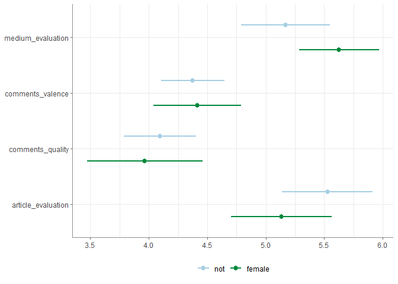

Tidycomm provides convenience functions for common tasks in communication research. All functions follow the style and syntax of the tidyverse.
Currently, tidycomm includes functions for various methods of univariate and bivariate data description and analysis, data modification, visualization, and intercoder reliability tests.
Installation
Install tidycomm from CRAN:
install.packages("tidycomm")Or install the most recent development version of tidycomm with:
remotes::install_github("joon-e/tidycomm")Usage
tidycomm functions follow the style and syntax of the tidyverse functions:
- they always assume a
tibbleas their first argument - they will always return a
tibbleas well, so they can be easily integrated into pipes - data variables (
tibblecolumns) are passed to function calls directly as symbols
WoJ %>% # Worlds of Journalism sample data
describe(autonomy_selection, autonomy_emphasis)
#> # A tibble: 2 × 15
#> Variable N Missing M SD Min Q25 Mdn Q75 Max Range
#> * <chr> <int> <int> <dbl> <dbl> <dbl> <dbl> <dbl> <dbl> <dbl> <dbl>
#> 1 autonomy_select… 1197 3 3.88 0.803 1 4 4 4 5 4
#> 2 autonomy_emphas… 1195 5 4.08 0.793 1 4 4 5 5 4
#> # ℹ 4 more variables: CI_95_LL <dbl>, CI_95_UL <dbl>, Skewness <dbl>,
#> # Kurtosis <dbl>Most functions will automatically use all relevant variables in the data if no variables are specified in the function call. For example, to compute descriptive statistics for all numeric variables in the data, just call describe() without further arguments:
WoJ %>%
describe()
#> # A tibble: 11 × 15
#> Variable N Missing M SD Min Q25 Mdn Q75 Max Range
#> * <chr> <int> <int> <dbl> <dbl> <dbl> <dbl> <dbl> <dbl> <dbl> <dbl>
#> 1 autonomy_sele… 1197 3 3.88 0.803 1 4 4 4 5 4
#> 2 autonomy_emph… 1195 5 4.08 0.793 1 4 4 5 5 4
#> 3 ethics_1 1200 0 1.63 0.892 1 1 1 2 5 4
#> 4 ethics_2 1200 0 3.21 1.26 1 2 4 4 5 4
#> 5 ethics_3 1200 0 2.39 1.13 1 2 2 3 5 4
#> 6 ethics_4 1200 0 2.58 1.25 1 1.75 2 4 5 4
#> 7 work_experien… 1187 13 17.8 10.9 1 8 17 25 53 52
#> 8 trust_parliam… 1200 0 3.05 0.811 1 3 3 4 5 4
#> 9 trust_governm… 1200 0 2.82 0.854 1 2 3 3 5 4
#> 10 trust_parties 1200 0 2.42 0.736 1 2 2 3 4 3
#> 11 trust_politic… 1200 0 2.52 0.712 1 2 3 3 4 3
#> # ℹ 4 more variables: CI_95_LL <dbl>, CI_95_UL <dbl>, Skewness <dbl>,
#> # Kurtosis <dbl>Likewise, compute intercoder reliability tests for all variables by only specifying the post and coder ID variables:
fbposts %>% # Facebook post codings sample data
test_icr(post_id, coder_id)
#> # A tibble: 5 × 8
#> Variable n_Units n_Coders n_Categories Level Agreement Holstis_CR
#> * <chr> <int> <int> <int> <chr> <dbl> <dbl>
#> 1 type 45 6 4 nominal 1 1
#> 2 n_pictures 45 6 7 nominal 0.822 0.930
#> 3 pop_elite 45 6 6 nominal 0.733 0.861
#> 4 pop_people 45 6 2 nominal 0.778 0.916
#> 5 pop_othering 45 6 4 nominal 0.867 0.945
#> # ℹ 1 more variable: Krippendorffs_Alpha <dbl>Almost all functions also come with integrated visualizations. So to visualize your results you can easily just append visualize() to the end of your commands:
snscomments %>% # experimental social-media-post perception sample data
dplyr::filter(group == 3) %>%
t_test(
gender,
medium_evaluation,
article_evaluation,
comments_quality,
comments_valence
) %>%
visualize()
For detailed examples, see the following articles: